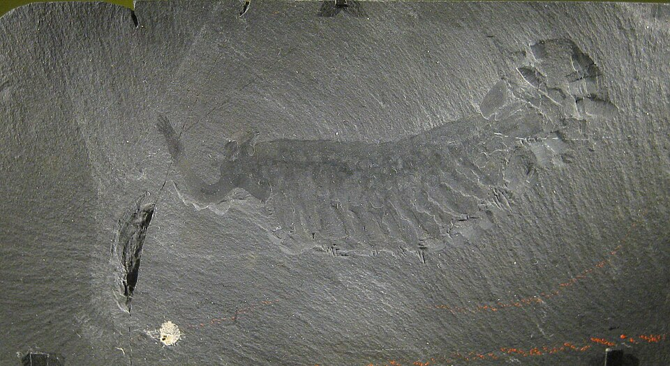
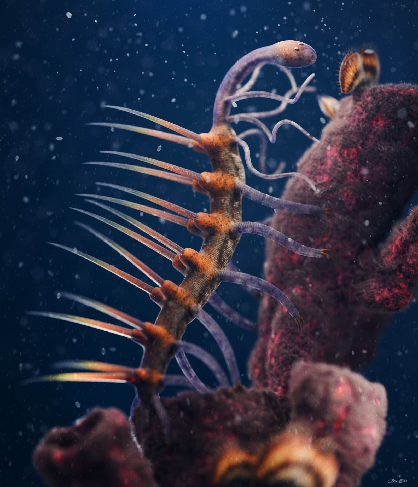
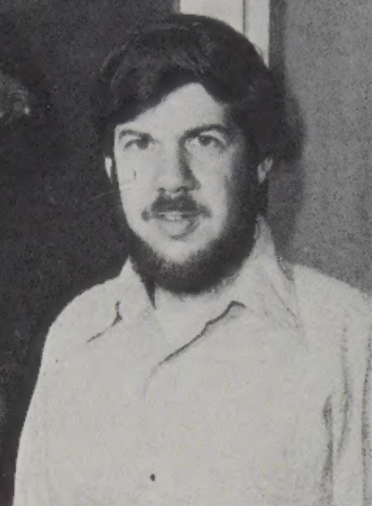
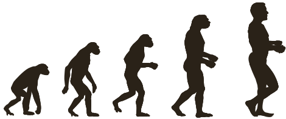
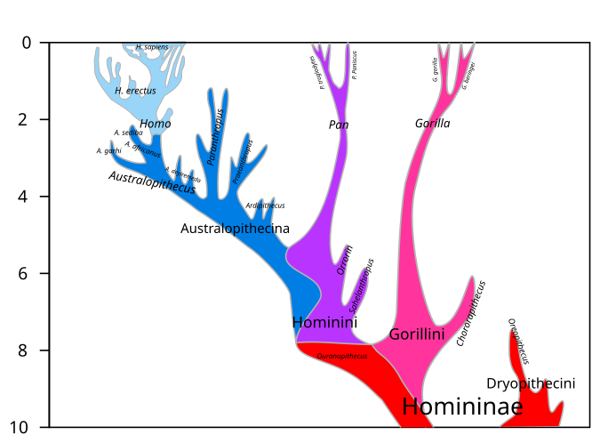

Special Report / Biology & Evolution
「より賢く、より高度に」——進化という言葉に染みついたその方向感覚は、200年のあいだ私たちの目を曇らせてきた。生物は坂道を登っているのではない。壁ぎわをふらつきながら歩く、酔っ払いのようにして歴史を進んできた。
スティーヴン・ジェイ・グールド『フルハウス——生命の全容』刊行。進化を「進歩」ではなく「壁際の酔歩」として描き出した。
同年7月、クローン羊ドリー誕生。遺伝子が「本人らしさ」を保証しないことが可視化された年でもある。
この記事の読みどころ——ランダムウォーク選抜のシミュレーターで、「目的なき進化」が「進歩」に見える錯覚を体験する。
水族館の水槽の前で、子どもに聞かれたことがある。「この魚も、ずっと経ったら人間になるの?」。笑って首を振りながら、私はうまく答えられなかった。ならないとは言えるのだが、「なぜならないか」を十秒で説明できない。
進化という言葉を、私たちはいつの間にか「前に進む」という意味で覚えてしまった。教科書の、猿から人間へと歩いていくあの一列の絵。アプリのアップデート通知のような響き。レベルアップ、という語感。
しかし生物学者たちが200年かけてたどり着いたのは、その真逆の結論だった。進化に目的はない。行き先も、ゴールも、上昇も、存在しない。
生物は「より優れた形」を目指して進化しているわけではない。環境に合うものが残り、合わないものが消える——それだけの積み重ねが、38億年続いてきた。複雑化の錯覚は、単純な統計の副産物に過ぎないことを、乱歩のシミュレーターで目撃する。
1859年、ダーウィンが『種の起源』を世に出したとき、彼はひとつの厄介な単語を選んだ。evolution——この語はもともと「巻物をひらく」というラテン語 evolvere に由来し、隠されていた計画が展開していくというニュアンスを引きずっている。ダーウィン自身、最終版でようやくこの語を本文に採用した。それほど慎重だった。
にもかかわらず、言葉は意味を裏切る。ヴィクトリア朝の英国で進化論が受け入れられた最大の理由は、「神の計画なしに世界を説明できる」という革新性と同時に、「生物は着実に高みへ登っている」という目的論目的論(teleology)
自然現象には向かうべき目的や終着点があるという考え方。ギリシャのアリストテレス以来、西洋思想の深部に埋め込まれている。進化生物学が200年かけて切り離そうとしてきた最大の罠。的な錯覚と馴染んだからだった。進化は進歩だ——その甘美な誤訳は、教室の壁のあのイラストで完成する。


カンブリア紀カンブリア紀(Cambrian period)
約5億3900万年前〜4億8500万年前の地質時代。硬い殻や骨格を持つ動物群が一気に出現し、現在の動物門の大半がこの時期に登場した(カンブリア爆発)。バージェス頁岩はこの時代を代表する化石産地。の海は、今の地球とは別の星のように見える。バージェス頁岩バージェス頁岩(Burgess Shale)
カナダ・ロッキー山脈で1909年に発見された約5億500万年前の化石層。軟体部まで保存された状態で、現代のどの分類群にも属さない奇妙な動物が大量に出土した。グールドが『ワンダフル・ライフ』(1989)でこの化石群を扱い、進化の偶発性を論じた。から出土する生物たちは、眼の数も体節の配置もバラバラで、現代の分類学の枠に収まらない。ここには、生物の基本設計が今より豊富に試されていた痕跡がある。そのうち生き残った系統だけが、今の地球を占めている。
古生物学者スティーヴン・ジェイ・グールドは、この奇妙な化石群に新しい意味を与えた。彼は問う——もし生命の歴史のテープを巻き戻して、同じ出発点から再生したら、私たちはまた現れるか?

Stephen Jay Gould (1941–2002)
Paleontologist, Harvard
ハーバード大学教授・古生物学者。断続平衡説の提唱者のひとりで、進化を「ゆるやかな上昇」ではなく「長い停滞と短い飛躍」として捉え直した。『ワンダフル・ライフ』(1989)と『フルハウス』(1996)で、進化に進歩の方向性はないことを一般読者に向けて論じ切った。
Photo: Lawrence Lipke, 1980, public domain
"Wind back the tape of life to the early days of the Burgess Shale; let it play again from an identical starting point, and the chance becomes vanishingly small that anything like human intelligence would grace the replay."
テープを巻き戻して、バージェス頁岩の時代にまで戻そう。同じ出発点から再生し直してみれば、人間のような知性がふたたびそこに現れる確率は、限りなくゼロに近い。
— Stephen Jay Gould, Wonderful Life, 1989
グールドの主張は単純で、しかし破壊的だ。生命の歴史は「より良いもの」が残った結果ではない。5億年前にたまたま生き残った数十の基本形が、そのあとの多様化の原料になった。絶滅した奇妙生物のほうが優れていなかった保証はどこにもない。隕石が少しずれたら、知性を持つのはタコの近い仲間だったかもしれない。
この「直線」の呪いをもっとも視覚的に焼きつけたのが、1965年にタイム・ライフ社の図鑑に載った、ルドルフ・ザリンジャーの挿絵「The Road to Homo Sapiens」である。四つ足の祖先が、少しずつ背を伸ばし、ついに現代人に至る、あの一列。実は原作者のザリンジャー自身、線形表現に反対していた。だが依頼主の科学者が押し通した。そして教科書に永遠にコピーされつづけた。

これが、ザリンジャーの挿絵から派生して世界中に広まった「猿から人へ」の一列行進である。直線的な進化も、「より高度なもの」への方向性も、生物学は認めていない。実際の人類史は枝分かれの茂みで、この絵のような一列の系譜は存在しない。図版: M. Garde (Wikimedia Commons), CC BY-SA 3.0(赤×は本記事で追加)
左列の言い方は、どれもこの記事を書いている私にとっても自然に出てくる。脳は目的と意図で世界を組み立てる装置だから、目的のない過程を語ろうとすると、どうしても語彙のほうが追いつかない。だがこのズレが、理解を200年遅らせてきた。
よくある誤解
進化とは、生物がより優れた形態へと「進歩」していく過程である。
実際は
進化とは、各世代の局所適応の積み重ねであり、「より優れた」の基準は環境が変わるたびに書き換わる。普遍的な優劣は存在しない。
よくある誤解
複雑な生物ほど「進化している」。ヒトは最上位にいる。
実際は
地球の生物量でも種数でも、バクテリアが圧倒的に優勢。複雑化は統計分布の長い裾にすぎず、中心はずっとバクテリアのままだ。
よくある誤解
ヒトは進化のゴールである。だから他の動物より「上」だ。
実際は
今この瞬間が、すべての現存種にとっての進化の最先端である。ゴールはなく、ヒトはブッシュの末端の一枚の葉に過ぎない。
議論だけでは腑に落ちない。だから、手を動かしてみる。以下は、グールドが『フルハウス』で提示した「酔っぱらいの歩行」モデルを、ブラウザ上で走らせるシミュレーターだ。300の個体(点)が、「複雑度」の軸に沿って世代ごとにランダムに一歩ずつ動く。方向の選好はない。ただし、最小複雑度の壁(これ以上単純にはなれない下限)だけが効く。
試してほしい設定は2つ。左壁のON/OFFと、方向選抜(「複雑なほどわずかに有利」という偏り)のON/OFF。初期状態は左壁ON、方向選抜OFF——つまり、完全にランダムな歩行だ。再生ボタンを押して、500世代の歩みを見てほしい。
300の個体(点)が「複雑度」の軸上を世代ごとにランダムに歩く。「▶ 再生」ボタンで500世代を一気に進め、分布の形の変化を観察する。下の3パターンを順に試すと、「目的のない進化が『進歩』に見える理由」が体で分かる。
何度か走らせてみると、ある感覚が手に入るはずだ。方向選抜をONにすれば、分布全体が右に流れていく(これが積極的な適応進化のイメージ)。しかしOFFのままでも、最大値は伸びる。伸びる理由は、左側に壁があるから「左に行きたくても行けない」一方で、右側は空いているからだ。平均が動かなくても、裾だけが伸びる。これが遺伝的浮動遺伝的浮動(genetic drift)
自然選択によらず、集団内で遺伝子の頻度がランダムに揺らぐ現象。特に集団サイズが小さいほど効く。進化の「方向のなさ」を数学的に扱うときの基本概念。の効いた世界の景色である。
グールドの書名『フルハウス』は、ポーカーの役から来ている。彼の真意は、「進化の中心(モード)はバクテリアである。ヒトは分布の右端の裾にぽつんと現れた一枚のカードに過ぎない」という構図だ。シミュレーターのヒストグラムをよく見てほしい——左に張りついた山がモードであり、右に伸びていく希少な点が「複雑な生物」だ。
シミュレーターの動きを3ステップに分解する。なぜ方向なき進化が、外から見ると方向があるように錯覚されるのか。その仕組みは驚くほど簡単な統計の産物だ。
各個体(種、系統)が、世代ごとに複雑度の軸をランダムに±一歩動くと考える。ここに「より複雑になりたい」という意志はない。突然変異の大半は中立か、わずかに不利か、わずかに有利のどれかで、長い時間で均すと方向性はほぼゼロになる。これが木村資生の中立説が明らかにしたことでもある。
ただし、複雑度には下限が存在する。自己複製できる最小構造より単純になれば、それはもう「生きもの」ではない。ここに「壁」が生まれる。左に行きたくても、行ける場所がない。このとき乱歩は、反射壁のあるランダムウォークという古典的モデルに変わる。
時間が経つほど、分布は右に長い尾を引く。最大値だけが着実に伸びていく。一方、モード(最頻値)と平均は壁のすぐそばに張りついたまま動かない。外から「最大値」だけを追うと進歩に見えるが、中央値は38億年ずっとバクテリア近傍である。進歩の幻影は、長い尾だけを見て中心を見ないことで生まれる。
このモデルは、分子レベルでも正しい。1968年、日本の遺伝学者木村資生木村資生(1924–1994)
国立遺伝学研究所の集団遺伝学者。1968年、分子レベルの進化の大部分は自然選択ではなく中立的な浮動によって起きるという「中立説」をNatureに提唱。進化生物学を定量的に書き換えた日本発の理論。がNature誌に「中立説中立説(Neutral Theory)
DNA配列の進化の大半は、適応上ほぼ差のない変異が偶然によって固定されていく過程だ、という理論。自然選択だけでなく、偶然も進化の主要エンジンだと主張した。」を発表した。DNAレベルでの進化の大半は、自然選択ではなく偶然の固定によって起きている。生物の設計図そのものが、目的なき乱歩の結果なのだ。
ここで誤解を避けたい。進化に「目的」はないが、自然選択自然選択(natural selection)
ダーウィンが提唱した進化の駆動力。環境内でより多くの子孫を残す個体の形質が、世代を経るにつれ集団に広がる。意志も意図もなく、統計的な帰結として起きる。はちゃんと働いている。生き残りやすい形質は残るし、不利な形質は消える。適応度適応度(fitness)
ある個体や遺伝子が次世代にどれだけ子孫を残せるかを測る量。環境ごとに定義され、環境が変われば何が「適応的」かも変わる。絶対的な優劣ではない。は実在する。ただしその「有利・不利」の基準はいま・ここの環境によって決まるだけで、「生物全体が目指す一つの頂点」ではない。適応は局所的で、一時的で、相対的だ。
面白いのは、方向なき乱歩からでも、収束進化収束進化(convergent evolution)
系統的に遠い生物が、似た環境で似た形質を独立に獲得する現象。タコとヒトのカメラ眼は5億年前に分岐した系統で独立に発達した代表例。のような「似た解」が何度も出現すること。タコの眼とヒトの眼は、別々の系統で独立に発明された。世界には「良い眼を作る物理的正解」がいくつかしかないので、ランダムな探索でも同じ解に辿り着くことがある。これを「進化は目標に向かっている」と読み違えるのは、やはり錯覚だ。良い解が複数の経路から発見されただけで、最初から用意されていた到着点ではない。
この年表を眺めると、「進化に目的はない」という命題は、一夜にして証明されたものではないとわかる。進化論自体は1859年に生まれたが、そこから「目的」「進歩」「高等・下等」といった語彙を一つずつ外す作業に、生物学者たちはその後130年以上を費やしてきた。私たちの日常語がまだ「進化=アップデート」と取り違えているのは、ある意味で当然なのだ。科学の側も、言葉から自由になるのに時間がかかった。
ここまで見てきた「進歩の錯覚」は、統計の話だった。グールドはもうひとつ別の刃を出した——偶発性偶発性(contingency)
歴史の結果が、必然ではなく、途中で起きた無数の偶然の積み重ねによって決まっているという考え方。グールドは生命史を「もう一度再生したら別の結果になる」テープに喩えた。だ。冒頭でも引いた「テープを巻き戻す」という彼の問いを、ここで実際に手を動かして試してみる。
以下のシミュレーターは、6つの「平行宇宙」で同じ根から進化を走らせる。各宇宙では毎世代、それぞれの枝が独立に分岐・継続・絶滅のいずれかをランダムに選ぶ。再生ボタンを押すと、同じ初期状態・同じルールから、まったく別の系統樹が6本同時に育つのが見える。
何度か再生して気づくのは、6つの宇宙のうち、赤丸がつく宇宙もあれば、つかない宇宙もあることだ。「私たちが存在する」という事実は、進化の必然ではなく、ただ一度たまたま選ばれた枝の先端で起きた出来事である。カンブリア紀から再生すれば、知性は別の枝に現れるかもしれないし、どこにも現れないかもしれない。
この「たまたま選ばれた枝の先端」という構図は、抽象的なシミュレーションの中だけの話ではない。私たち自身のヒト族(ホミニニ)の系統を過去1000万年ぶん遡って描くと、同じ形がそのまま現れる。ヒトも、チンパンジーも、ゴリラも、同じ祖先から別方向へ伸びた枝の一本ずつに過ぎない。

図の上寄り・左側にある Homo と書かれた領域を探してほしい。その内側に H. sapiens——これが私たちだ。図全体を見渡すと、上端の「0の線」(現在)まで届いている色の塊はほんのわずかでしかない。H. erectusもアウストラロピテクスもパラントロプスも、途中で終わっている。私たちはたどり着いたのではなく、たまたま剪定を生き延びた一本の末端にいる。
| H. sapiens | ホモ・サピエンス | 私たち(現生人類)。約30万年前に登場 |
|---|---|---|
| H. erectus | ホモ・エレクトゥス | 最長寿のヒト属。約180万〜10万年前。絶滅 |
| Homo | ホモ(ヒト属) | ハビリス・エレクトゥス・サピエンスなどを含む属 |
| Australopithecus | アウストラロピテクス | 約400〜200万年前の猿人。ルーシーの仲間。絶滅 |
| Paranthropus | パラントロプス | 頑丈型の猿人。約270〜120万年前。系統ごと絶滅 |
| Ardipithecus | アルディピテクス | 約580〜440万年前の初期ホミニン。絶滅 |
| Sahelanthropus | サヘラントロプス | 最古級の候補(約700万年前)。絶滅 |
| Orrorin | オロリン | 約600万年前。初期二足歩行の候補。絶滅 |
| Pan | パン属 | チンパンジーとボノボ。ヒトと最も近縁な現生の親戚 |
| Gorilla | ゴリラ属 | 現生。約800万年前にヒトの系統と分岐 |
| Hominini | ヒト族 | ヒト亜族 + チンパンジー亜族を含む「族(tribe)」 |
| Homininae | ヒト亜科 | ヒト・チンパンジー・ゴリラを含む亜科 |
| Australopithecina | アウストラロピテクス亜族 | アウストラロピテクス属+パラントロプス属などをまとめた分類群 |
「進化に目的はない」という結論は、冷たいものではない。むしろ、生物の世界を見る目をやわらかくしてくれる。バクテリアはヒトの祖先でも原始形態でもない。彼らは今この瞬間も、独自の環境に精密に適応した「現役の成功者」だ。地下深くで硫黄を食べる古細菌も、私たちの腸内で働く乳酸菌も、ブッシュの別の先端で元気に揺れている葉である。
Life is a copiously branching bush, continually pruned by the grim reaper of extinction, not a ladder of predictable progress.
生命は、絶えず枝分かれするブッシュである。絶滅という死神に刈り取られ続けるその茂みは、予測可能な進歩のハシゴなどではない。
— Stephen Jay Gould, Full House, 1996
目的のない乱歩から、眼や翼や意識のような複雑なものが立ち上がる——この事実は、最初は少し怖い。計画がないなら、私という存在も偶然の副産物ということになるからだ。だがグールドは、そこにむしろ自由と驚きを見出した。私たちは「到着点」ではなく、「まだ続いている酔歩の途中で、たまたま現れた一枚の葉」である。だからこそ、他の葉たちとの関係は、上下ではなく横並びになる。
作品・文化への登場
ポケモンの"進化"
ピカチュウがライチュウになる現象は、生物学的には進化(evolution)ではなく変態(metamorphosis)に近い。世代を超えた集団の変化ではなく、一個体が一瞬で形を変える。ゲームがあまりに普及したため、若い世代にとって「進化=パワーアップ」という誤解が強化された側面がある。
『2001年宇宙の旅』(1968)
冒頭、猿が骨を武器として振り下ろす瞬間、ジャンプカットで骨が宇宙船になる。映画史に残る名カットだが、「骨 → 宇宙船」の一直線の進歩イメージはまさに"直線型進化観"を前提にしている。スタンリー・キューブリックが描いた20世紀の進化観の典型例。
「The March of Progress」
ザリンジャーが1965年に描いた、猿から人間へ一列に歩く挿絵。教科書・Tシャツ・CM・風刺画に使われ続け、進化生物学者が最も「誤解のもと」として警告しつづけてきたイメージ。原作者本人がブッシュ型の別案を用意していたことは、ほとんど知られていない。
Full House: The Spread of Excellence from Plato to Darwin
本記事の中核となる書籍。進化を「酔っぱらいの歩行(drunkard's walk)」として統計的に描き直し、「進歩」概念を解体した。バクテリアこそがモードであるという主張の原典。
Wonderful Life: The Burgess Shale and the Nature of History
バージェス頁岩の奇妙動物を通して、進化の偶発性(contingency)を論じた古典。「生命のテープを巻き戻したら」という思考実験はここから生まれた。
Evolutionary Rate at the Molecular Level
中立説の原典論文。分子レベルの進化の大半は自然選択ではなく中立的な偶然で説明できることを示し、進化を定量的に考える枠組みを書き換えた。
同条件の12並行系統のうち、1系統だけがクエン酸利用能を獲得。進化に「偶然の積み重ね」が効くことを実験で示した代表的研究。
ペイリーの「時計職人論証」(設計者がいなければ時計はできない)に対し、自然選択は「盲目の時計職人」だと反駁。進化に設計者が不要であることを一般読者向けに展開した名著。
Misconceptions about Evolution (UC Berkeley)
教育現場で繰り返される進化の誤解を類型化して解説。「進化=進歩」「ヒトがゴール」「生物は何かのために進化する」などの典型的な誤解が整理されている。
本記事中の「March of Progress」図版の出典。CC BY-SA 3.0。作者自身が「厳密さを目指したものではなく、進化のプロセスの象徴である」と明記しており、誤解の代表例としての用途に合う。
本記事中のヒト族系統樹の出典。CC BY-SA 4.0。Stringer, C. (2012) “What makes a modern human” Nature 485, 33–35 を基礎にした10 Mya〜現在のホミニニ系統樹。